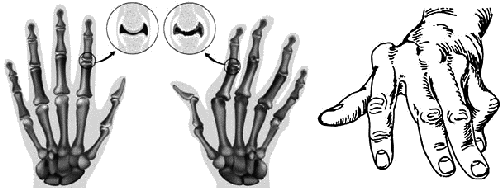

Глава 9. Заболевания костей
Кости – неотъемлемая часть опорно–двигательной системы человека. Они выполняют защитную функцию для внутренних органов, мягких тканей. В медицинской практике заболевание костей у человека происходит по разным причинам и встречаются как у взрослых, так и у детей. Костная ткань нуждается в постоянной подпитке различными витаминами и минералами, их отсутствие или недостаток может привести к различным болезненным состояниям и даже к полному разрушению костей.
Врожденные пороки опорно-двигательного аппарата, появляющиеся с возрастом дегенеративные изменения, а также нарушение целостности кости тоже являются частыми причинами развития серьезных проблем со здоровьем. Воспаление вызывает занесенная инфекция, которая попадает либо через открытую рану, либо через кровеносную или лимфатическую систему. А запоздалое лечение часто приводит к развитию гнойных очагов, например, остеомиелита.
Виды заболеваний костей. Все болезни костной ткани человека делятся на несколько видов в зависимости от причины возникновения:
- врожденные;
- инфекционные;
- посттравматические (гнойные);
- метаболические.
Любые нарушения функций опорно–двигательного аппарата протекают тяжело и приводят к довольно серьезным последствиям, если их вовремя не диагностировать и не заниматься их лечением. Своевременное обращение к врачу более чем в 80% случаев позволяет полностью избавиться от неприятных симптомов.
Болезни бедренной кости. Такое тяжелое состояние, как некроз бедренной кости, возникает из–за неполноценного питания костной ткани. Основной причиной данной патологии является нарушение микроциркуляции крови. Развитию этого неприятного недуга способствуют травмы, злоупотребление алкоголем, малоподвижный образ жизни, врожденный вывих бедра. Микроциркуляцию крови в бедре можно восстановить только хирургическими методами. Для этого просверливают в головке бедра несколько каналов, благодаря которым начинают заново расти сосуды. Также эффективна пересадка трансплантата из таза.
Болезни стопы и пятки. Боли в стопе может вызвать остеопороз. Его причиной является вымывание фосфатов и кальция из организма. Появлению остеопороза способствует:
- недостаточное содержание в рационе витаминов, кальция;
- возрастные изменения;
- нарушение функций эндокринной системы;
- избыточная масса тела;
- малоподвижный образ жизни.
Лечение патологии осуществляется в условиях стационара при помощи препаратов, содержащих кальций, минералы, витамин Д, антибактериальных средств, анальгетиков, анестетиков, нестероидных противовоспалительных средств, гормональных препаратов, антиагрегантов, антикоагулянтов.
К заболеваниям стопы можно отнести пяточную шпору. Этот небольшой, но довольно неприятный острый нарост на подошве стопы, представляющий собой остеофит (разрастание костной ткани). При нагрузке такой шип сдавливает мягкие ткани, вызывая сильную боль. Существуют довольно эффективные способы лечения этой проблемы, которые позволяют довольно быстро избавиться от болей.

Рис 9.1 Характерная деформация кисти при ревматоидном артрите
Болезни рук и кистей. При существенной мышечной нагрузке наряду с мышцами гипертрофируются кости. Именно в тех местах, где происходит максимальное приложение силы, появляются бугры, гребни, просветления в структуре, что может привести к переломам. Такое состояние называется стилоидитом лучевой кости, его относят к профессиональным проблемам со здоровьем. Боли в кисти могут быть связаны с проблемами суставов: подагрическим, ревматоидным артритом и остеоартрозом. При таких проблемах врачи рекомендуют обязательное уменьшение нагрузки, лечебную физкультуру, препараты, содержащие глюкозамин и хондропротекторы.
Болезни костей плеча. Заболевания костей плеча возникают в результате переломов, запущенных вывихов, чрезмерных нагрузок, трещин, ушибов. Также причиной патологии может стать злокачественная или доброкачественная опухоль.
Болезни костей черепа. Заболевания костей черепа вызывают различные пороки, аномалии развития, травмы, опухоли основания и свода. Иногда возникают воспалительные процессы в виде периостита, остеомиелита, тромбофлебит вен черепа. Своевременная диагностика таких патологий помогает избежать серьезных осложнений.
Заболевания височных и челюстных костей. Болезни челюстных, височных костей имеют различную этиологию и клинические проявления. Их можно подразделить на воспалительные и опухолевые. Сюда можно отнести воспаление костной ткани, надкостницы, а также остеомиелит. Осложнения и последствия этих недугов различны, нередко при адекватном лечении наступает полное выздоровление, но бывают тяжелые случаи, когда прогрессирующая проблема приводит к сепсису.
Болезни костей позвоночника. Самым распространенным заболеванием костей позвоночника, характеризующимся нарушением двигательных функций, является остеохондроз — дистрофические нарушения костной ткани и суставных хрящей. Хрящ, поврежденный (при данной патологии) остеохондрозом, постепенно закостеневает. Позвоночный диск уменьшается, теряет амортизационные свойства и защемляет нервные окончания. Все это сопровождается неприятными ноющими болями в спине, ломотой, а при отсутствии должного лечения происходит атрофия конечностей. В результате невылеченного остеохондроза могут появиться другие проблемы с позвоночником:
- радикулит;
- миозит;
- спондилез;
- сколиоз.
Существует много способов лечения расстройств опорно–двигательного аппарата, но всегда нужно помнить о своевременности обращения к врачу. Чем раньше начата терапия, тем значительно меньше появится осложнений, которые могут потребовать серьезного хирургического вмешательства.